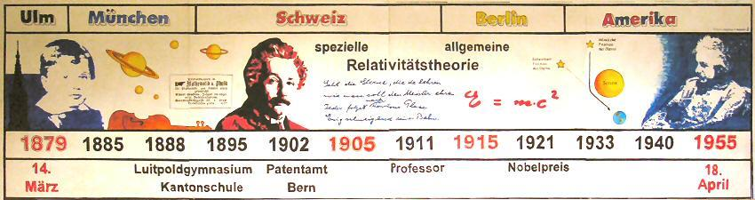

Die Schritte bis zur neuen Theorie der Gravitation
Als Einstein 1907 den langen Weg von der speziellen zur allgemeinen Relativitätstheorie antritt, ist er noch der weithin unbekannte Angestellte im Berner Patentamt. Am Ende des Weges, 1915, wird er dagegen der in Fachkreisen schon hochangesehene Professor in Berlin sein, der, wie Planck später sagte, nur „an den Leistungen Johannes Keplers und Isaac Newtons gemessen“ werden kann.

Der Weg zur allgemeinen Relativitätstheorie begann 1907 einerseits mit dem Geistesblitz, den Einstein als „den glücklichsten Gedanken meines Lebens“ bezeichnete, zum anderen mit einer Einschränkung seiner bisherigen Arbeiten zur Relativität, die grundsätzlicher Natur war. Die Letztere war die Einsicht, dass die Lichtgeschwindigkeit unter dem Einfluss der Gravitation keine Konstante ist, die spezielle Relativitätstheorie demnach nur unter der Bedingung gültig sein konnte, dass keine Schwerkraft vorhanden sei, wie Einstein in einem Aufsatz von 1911 wiederholte: „Die Relativitätstheorie hat ergeben, daß die träge Masse eines Körpers mit dem Energieinhalt desselben wächst. (…) Das so befriedigende Resultat der Relativitätstheorie, nach dem der Satz von der Erhaltung der Masse in dem Satz von der Erhaltung der Energie aufgeht, wäre nicht aufrecht zu erhalten“. Der Geistesblitz dagegen betraf die Äquivalenz zwischen träger und schwerer Masse, also die Übereinstimmung der konstanten Beschleunigung eines Bezugssystems und der Schwerkraft: „Ich saß auf meinem Sessel im Berner Patentamt, als mir plötzlich folgender Gedanke kam: ‚Wenn sich eine Person im freien Fall befindet, dann spürt sie ihr eigenes Gewicht nicht‘. Ich war verblüfft. Dieser einfache Gedanke machte auf mich einen tiefen Eindruck. Er trieb mich in Richtung einer Theorie der Gravitation.“ Bis zur ersten Schrift, in der dieser Geistesblitz zu einer näheren physikalischen Formulierung führte, sollten allerdings noch über drei Jahre vergehen, denn „Einstein äußerte sich vom Dezember 1907 bis zum Juni 1911 (…) nicht über Fragen der Gravitation.“ Im Jahr 1908 kam es aber zu einer bahnbrechenden Neuerung, der Einstein zunächst skeptisch gegenüberstand und die er sogar als „überflüssige Gelehrsamkeit“ abtat: der mathematischen Formulierung der Raumzeit durch seinen ehemaligen Lehrer Hermann Minkowski, dessen Urheberschaft dieser revolutionären Konzeption später von Einstein ausdrücklich anerkannt und gewürdigt wurde. Im Minkowski-Raum kann das relative Verhältnis der Größen von Raum und Zeit in der speziellen Relativitätstheorie durch die Setzung einer imaginären Zeiteinheit anschaulich als Drehung dargestellt werden. Erst 1912 ließ sich Einstein von den Vorzügen des Minkowski-Raums überzeugen.
Wikipedia